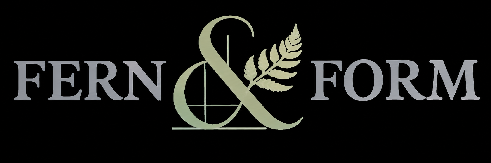

Residential Landscape Design
- Front and backyard design
- Private gardens and outdoor living spaces
- Entrance and foundation planting
- Privacy screening and garden renovation
- Landscape concepts and site layouts

Landscape & Botanical Design Studio
Fern & Form is an independent design studio serving Southeast Michigan, specializing in residential and commercial landscapes, botanical design, and sustainable site planning.
We create distinctive, thoughtfully designed spaces where nature and architecture come together.
INSIDE AND OUT

CONCEPT IMAGERY
THE PORTFOLIO
A selection of residential landscapes, public gardens, recreational parks and botanical environments.
Public & Recreational · Planting Design
A landscape master plan connecting water, gardens and public gathering spaces.
Founder's Professional Portfolio
Residential
A planted screening concept for a residential side yard.
Public & Recreational
A park concept bringing wetlands, paths and planting together.
Founder's Professional Portfolio
Public & Recreational
A landscape master plan for a rock garden and recreational spaces.
Founder's Professional Portfolio
Planting Design
An edible planting concept with raised planters and a plant schedule.
Botanical Interiors
Botanical concepts for hospitality, residential and workplace spaces.
Public & Recreational
A community landscape concept for recreation and gathering.
DESIGN WITH PURPOSE
A considered approach to every space.
Understanding the client’s vision, needs, lifestyle, and project objectives.
Evaluating site conditions, environmental characteristics, existing vegetation, and design opportunities.
Developing concepts, spatial arrangements, planting compositions, and visual presentations.
Refining the selected concept and preparing appropriate design drawings and supporting documentation.
NATURE WITH INTENTION
We believe that a well-designed landscape is more than an arrangement of plants and materials. It is an extension of architecture, an expression of place, and a living environment that evolves over time.
Our design philosophy embraces simplicity, natural textures, seasonal transformation, and a sensitivity to the unique character of each site.
Nature in Structure.
Rana Mehdi
Landscape Designer | Agricultural Engineer | Founder of Fern & Form
I am a landscape designer and agricultural engineer with a Master’s degree in Landscape Architecture and over seven years of experience in residential landscapes, public parks, and recreational spaces.
Bringing together creativity, technical expertise, and an understanding of natural systems, I approach each project with a focus on thoughtful design, functionality, and environmental sensitivity.
As the founder of Fern & Form, I believe meaningful landscapes emerge from the connection between people, architecture, and nature. Guided by simplicity, ecological awareness, and timeless beauty, I strive to create outdoor spaces that inspire, connect, and endure.
LET'S CREATE SOMETHING MEANINGFUL
Whether you are reimagining a private garden, developing a commercial landscape, exploring botanical design, or seeking environmental planning and design support, Fern & Form welcomes the opportunity to discuss your project.
Serving Metro Detroit, including Dearborn, Dearborn Heights, Westland, Canton, Livonia, and surrounding communities. Remote design collaboration is available for selected projects.
MICHIGAN, USA
Share a few details and we’ll be in touch.
